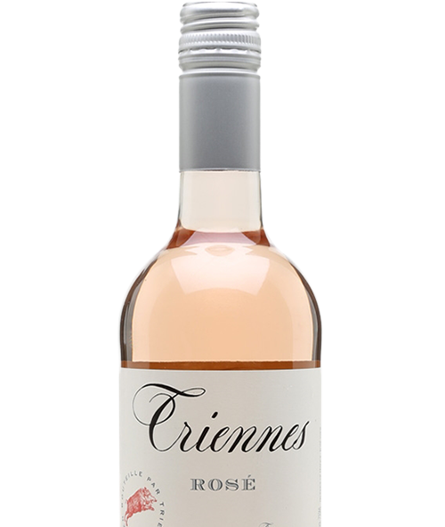
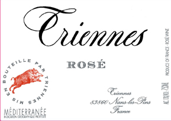

carefully curated opinions about the best (and worst) bars, restaurants, hotels, recipes, art and design across the world
I judge wines by their label
Triennes Rosé 2017 - $16

Triennes rose
2017
Provence France (though you wouldn’t know it from the label. More on that later...)
Cinsault with Grenache, Syrah and Merlot
The Wine
Nose: Pear and cantaloupe. (or is it honey dew? Nope... I'm going with cantaloupe0
After 5 minutes - Undeniable ripe peach scent.
5 more minutes pass - it smells like “green” fruit flavor. Whatever that is to you. Whether it’s watermelon (Big League Chew), or sour apple or kiwi… thats what it smells like (Don’t believe me? try it… I guarantee you’ll agree)
(note: I too cannot believe I let a glass of wine sit there for 10 minutes without drinking it. But… I was cooking! I swear I won’t let it happen again)
Taste: nice crisp mineral astringency. finishes to a green sour apple Jolly Rancher (ittle bit of sweetness).
A note on tasting the wine: I did zero research on the Criennes / Triennes before “tasting” this entire bottle of wine. I got a nose of pear with a sour apple finish. Now, doing a little bit of research, every. single. website. “fresh strawberries”, “red fruit”, “hints of raspberry” “vanilla” notes. 10 i didn’t get any of that. 2) it’s obvious they got all of that from the info sheet the winery sent out.
Now, I’m not saying my palette is more refined or “accurate” than these “professionals” that “make” the wine… but at least my opinion is real and honest.
The Design

When looking for an image of this bottle, I typed into the Google, "Criennes rose 2017". Google corrected me, 'do you mean "Triennes rose 2017"'? Thanks Google... but I can read. I'm a designer. I know type...The label clearly says (glances at bottle)..."Crienn...."... ::pause::..wait a minute... Are you kidding me??? You're trying to tell me thats at "T"???
The branding and typography are all wrong
Rule number 1 of branding: Make sure you can clearly read the name of your brand.
As a sometimes designer of wedding invitations, I love me a nice swashy calligraphic script. I get it.. they can be overly ornate sometimes, but this is just unacceptable. That is a "C" and not a "T". A capital script "T" needs to have a leftward-leaning tail to it and/or NEEDS to have a clearly defined cross stroke! (period).
Let's look at the calligraphic script comparison chart I whipped up:

That is clearly a "C"
Rule number 2 of branding: If a time-tested signifier is going to drive your sales INCLUDE IT ON YOUR PRODUCT LABEL.
I know that sounds like a mouthful, and there's probably a better way of saying that, but, in essence, branding matters. What you put on your label matters. It can be the deciding factor between someone buying your product or someone else's. Like I've mentioned before, I know very little about wine. I tend to buy wines for their labels, but when it comes to rose, the one thing I know is Provence in France is the most famous rose region in the world and typically produces dry, minerally, easy drinking wine. Looking at the label of this Criennes / Triennes rose, I know it's from France. It's got french on the label. I know it's rose. It says it there too. But Provence? Not a clue. It says "Nans-le-pins"...whatever that means. Turns out... it's a town in Provence. The one thing I know about rose is I like Provencial rose. I almost didn't buy this bottle becausse it didnt say "Provence" on the label. That's a problem
When it comes to rose provenance matters! (see what I did there?)
Otherwise, I actually really like the label design. it's on a nice ecru matte stock and the pop of red with the wild boar is eye catching.
The Wine
- Smell: 7/10
- Taste: 7/10
- Overall Quality 7/10
- COSPA*: 6/10
The Design
- Typography 4/10
- Materials and finishing 7/10
- overall design 6/10
- shelf standoutability 7/10
- Bonus points: none
Giant Squid Overall score: 85 Points
*COSPA is a category I got from Tabelog, the Japanese restaurant review site. It stands for COSt PerformAnce and represent the perceived value for the money spent or quality vs price paid. It is totally subjective, and yet easily one of the informative and referenced metrics.
These are also worth your time


A global branding , design & consulting agency from NYC, in Tokyo. We're big in Australia.